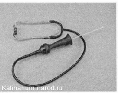

Проверка технического состояния двигателяТехническое состояние двигателя зависит от пробега автомобиля, своевременности проведения периодического технического обслуживания, качества применяемых эксплуатационных материалов, а также качества выполнения ремонта. Контролировать состояние двигателя следует регулярно, в процессе эксплуатации автомобиля. Признаками появления неисправностей могут быть: наличие масляных капель на месте стоянки автомобиля; загорание контрольной лампы неисправности двигателя или контрольной лампы аварийного давления масла, появление постороннего звука (шум, стук) при работе двигателя: дымный выхлоп; перемещение стрелки указателя температуры в красную зону;увеличенный расход масла, заметная потеря мощности. При выявлении хотя бы одного из перечисленных признаков необходимо провести более детальную проверку. Проверки технического состояния систем двигателя показаны в соответствующих разделах главы «Двигатель и его системы». Оценить техническое состояние двигателя с достаточной точностью можно по внешним признакам и с помощью доступного оборудования (компрессометр, манометр, технический стетоскоп). Последовательность выполнения 1. Подготавливаем автомобиль к выполнению работы 2. Осматриваем двигатель сверху и на смотровой канаве или эстакаде снизу. Подтеки масла могут свидетельствовать об износе сальников или уплотнительных прокладок. 3. Запускаем двигатель, при этом контрольная лампа аварийного давления масла должна погаснуть. Если контрольная лампа загорается на холостом ходу после прогрева двигателя и гаснет после увеличения частоты вращения коленчатого вала, то возможно изношены: шестерни масляного насоса, шейки коленчатого вала, вкладыши коренных и шатунных подшипников. Если лампа горит постоянно, то возможно, неисправна система смазки или датчик аварийного давления масла. Проверяем давление масла в системе смазки двигателя с помощью манометра. Эксплуатация автомобиля с недостаточным давлением масла в системе смазки приводит к серьезному повреждению двигателя. 4. После прогрева двигателя прислушиваемся к его работе. Выполнять диагностику неисправностей двигателя на слух удобно с помощью технического стетоскопа. С его помощью можно достаточно точно определить источник постороннего шума. Внимание! Во избежание получения травм, выполняя следующую операцию, не касайтесь подвижных деталей двигателя (шкивы, ремень) и не дотрагивайтесь до разогретых частей двигателя. 5. При появлении постороннего звука стетоскопом определяем зону, где этот звук наиболее слышим. По характеру звука и месту излучения звука определяем возможный источник звука и возможную неисправность. Цокающий звонкий звук под крышкой головки блока цилиндров, как правило, свидетельствуете неисправности гидрокомпенсаторов в приводе клапанов, равномерный шум в зоне ремня привода ГРМ может свидетельствовать об износе подшипников натяжного и направляющего роликов или подшипника насоса охлаждающей жидкости. Стуки в нижней части блока цилиндров и со стороны поддона картера, усиливающиеся с повышением частоты вращения коленчатого вала вызваны неисправностью коренных подшипников. При этом, как правило, давление масла в системе смазки низкое. На холостом ходу этот звук низкого тона, а с ростом оборотов его тон повышается. При резком нажатии на педаль газа двигатель издает что-то похожее на рычание — типа «гыр-р-р». Звонкие стуки в средней части блока цилиндров вызваны неисправностью шатунных подшипников. Ритмичный металлический стук в верхней части блока цилиндров, слышимый на всех режимах работы двигателя и усиливающийся под нагрузкой, вызван неисправностью поршневых пальцев. Приглушенный стук в верхней части блока цилиндров на непрогретом двигателе, стихающий и исчезающий при прогреве, может быть вызван изношенными поршнями и цилиндрами. Эксплуатация автомобиля с неисправными подшипниками и пальцами приведет к выходу из строя двигателя. 6. Если увеличился расход масла, а следов утечки не обнаружено: а) прогреваем двигатель до рабочей температуры. б) отсоединяем шланг вентиляции картера от дроссельной заслонки. в) подносим к шлангу лист бумаги. Если на бумаге появляются масляные разводы, то изношена цилиндро-поршневая группа. Степень износа определяем по компрессии в цилиндрах. г) если из системы вентиляции масляный туман не поступает, то причиной повышенного расхода масла может быть износ маслосъемных колпачков. При этом у автомобиля будет дымный выхлоп.
Работа двигателя с изношенной цилиндро-поршневой группой, неисправными маслосъемными колпачками или на некачественном топливе приводит к выходу из строя каталитического нейтрализатора и датчика концентрации кислорода. |